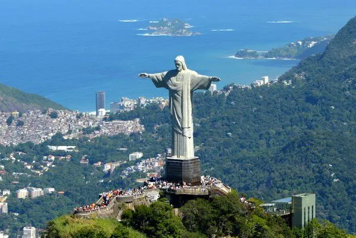
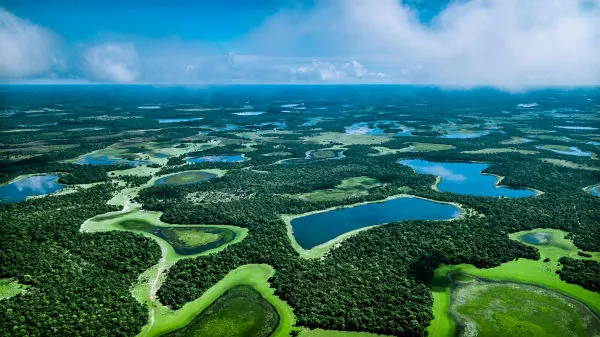

Bem-vindo ao Brasil Encantado
O Brasil e um pais de dimensoes continentais, com uma diversidade natural e cultural que poucos lugares no mundo podem oferecer. De praias paradisiacas a florestas exuberantes, de cidades vibrantes a vilarejos historicos, ha sempre um novo destino a explorar.

Por que visitar o Brasil?
Com mais de 8,5 milhoes de quilometros quadrados, o Brasil abriga alguns dos ecossistemas mais ricos do planeta, alem de uma cultura marcada pela miscigenacao e pela alegria do seu povo.
- Mais de 7.000 km de litoral com praias de diferentes perfis
- A maior floresta tropical do mundo: a Amazonia
- Patrimônios historicos tombados pela UNESCO
- Culinaria regional rica e variada
- Festivais e manifestacoes culturais ao longo de todo o ano
Destaque: Pantanal
O Pantanal e a maior planicie alagavel do mundo e um dos melhores lugares do planeta para observacao de fauna selvagem. Onças-pintadas, ariranhas, capivaras e centenas de especies de aves fazem desse lugar unico no mundo.
